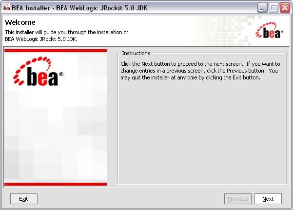
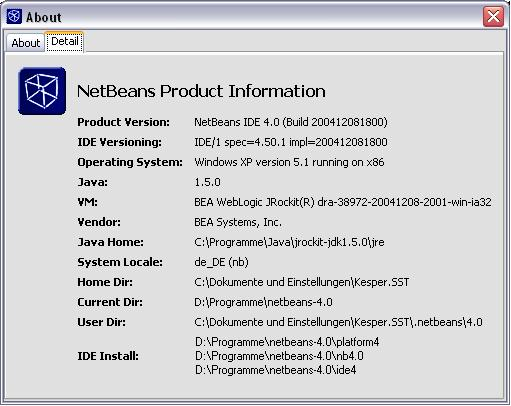
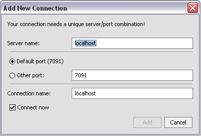
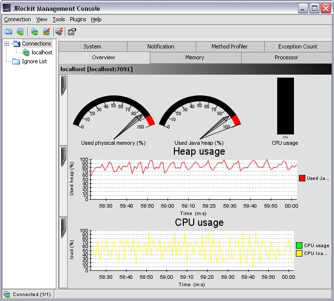
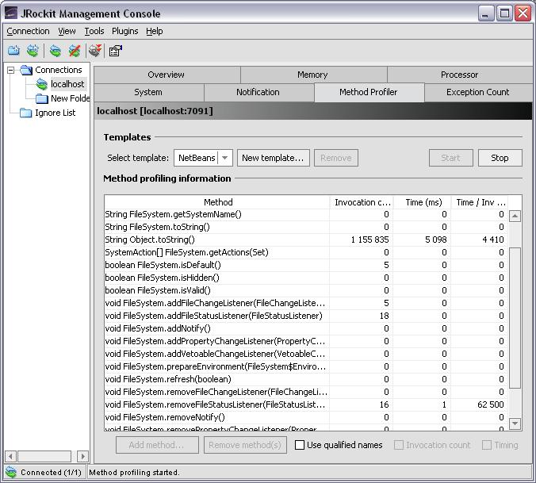
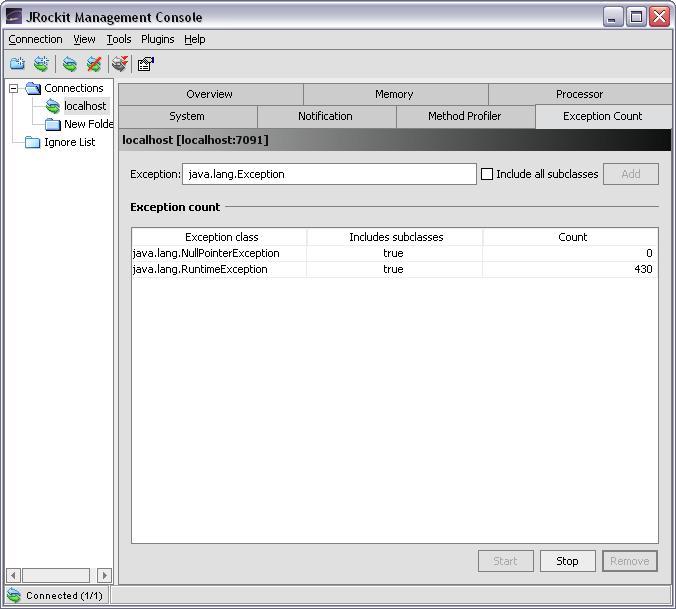
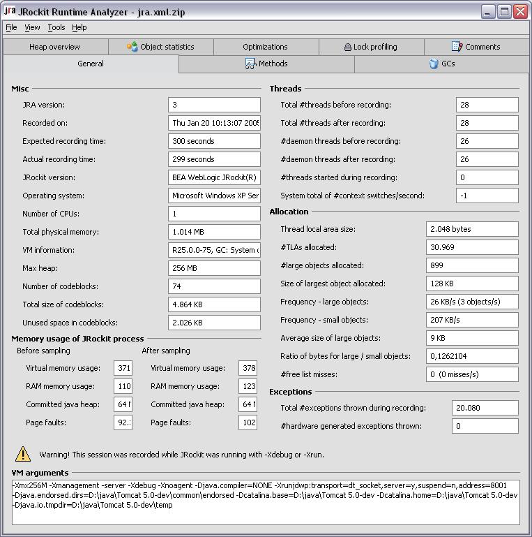
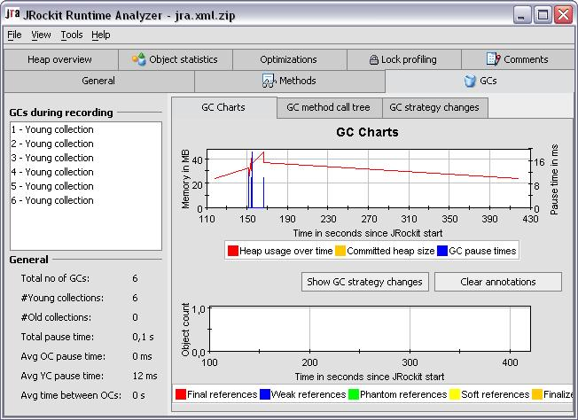
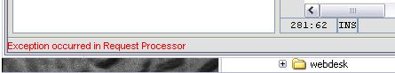

NetBeans IDE のヘビーユーザーはときどき、クラスパスのスキャンが予想より長くかかることを経験します。また、特に比較的古いマシンでは、NetBeans がリソースを大量に消費する場合があることも経験します。したがって、この IDE を高速化する方法を探すのは、おそらく良い考えです。しかし、どうすればこれを実現できるのでしょうか。ここでは、別の JVM の使用に関する 1 つの可能性について説明します。
JRockit を使用することの主な利点は、Intel プラットフォーム上でのパフォーマンスに最適化されていることと、ここで説明するコンソールや JRockit Runtime Analyzer といった、プロファイリング製品や管理製品が付属していることです。
この記事では、BEA WebLogic JRockit JVM (「JRockit」) を NetBeans IDE の実行時環境として使用する方法について説明します。
ここからアクセスできるエンドユーザーライセンス契約に同意すれば、JRockit を本稼働目的または開発目的で無料でダウンロードして使用できます
この記事の内容は次のとおりです。
なぜ別の JVM が必要なのか
この質問に答えるのは簡単ではありません。なぜなら明らかに、必ずしもすべての人が必要とするものではないからです。したがって、対象を絞ることにします。Java アプリケーションや Java ベースの Web アプリケーションの開発者のみが、この記事を読みたいと考え、内容に興味を持つと思われます。ただし、高可用性 Web サイトの管理者やオペレータも、ここで何かを得られる可能性があります。
JVM のプロファイリングの使用を試みたことがある方や、プログラムがすでに実行されている間に仮想マシン内で何が起こっているのかをより深く知りたいと思ったことのある方はおそらく、VM から提供される情報が非常に低レベルであるという問題にぶつかります。VM によって生成されたデータを分析するという深みにはまり込み、たいへんな苦労をすることになります。(たとえば、JVM 1.4.x の -Xprof パラメータや JVM 5.0 の -agentlib:hprof をオンに切り替えた場合)
そして、プロファイリングを使用しても、情報によっては取得不可能な場合もあります。この問題に対する解決策の 1 つとして、ユーザー独自のプロファイリングエージェントを記述することが考えられます。Java では、Java Virtual Machine Profiler Interface (JVMPI) 経由で VM の深い情報にアクセスできます。しかしそれは、独自のプロファイリングをネイティブな方法で実装する必要があることを意味します。低レベルのプロファイリング情報にアクセスするための Java の標準的な方法は、筆者が知るかぎり存在しません。
JRockit を使用すれば、このことを心配する必要がなくなります。JRockit にはいわゆる「コンソール」が付属しており、これを使用すれば、JVM 内で実行されるアプリケーションの重要な情報に直接アクセスできます。これは、単一メソッドの実行時間を推定したり、使用回数のもっとも多いクラスの概要を表示したり、スローされた例外をカウントしたりすることまで行います。
これはデバッグ専用か
それは明らかに「ノー」です。JRockit は、最高のパフォーマンスと信頼性を実現できるように設計され、Intel プラットフォーム向けに最適化されています。これは、BEA WebLogic Server の JVM として機能しています。
この記事をよくある BEA 製品の紹介記事にしたくはないので、JRockit や WebLogic Server の詳細に興味のある方は、このリンクをたどることをお勧めします。
その活用方法は
基本的に 2 つの方法があります。JRockit JDK のインストールが完了すると、異なる JVM を使用していることさえ気付かずに Java アプリケーションを開発して実行できます。ただし、一部のアプリケーションでの大幅なパフォーマンス向上には気付く可能性があります。1 つ言及しておきたいのは、プログラムの作りがばかげていれば、そのプログラムを以前よりも高速で実行させる方法はない、ということです。そのため、ここでは魔法のようなものについて説明しているわけではありません。
JRockit 環境をダウンロードするには、BEA Systems, Inc. の Web サイト http://www.bea.com にアクセスする必要があります。あるいは、ここをクリックするだけでダウンロード領域に直接アクセスできます。
JRA は別途、http://www.bea.com/framework.jsp 経由でダウンロードする必要があります
JRA および JRockit 自体のドキュメントも興味深いものであり、リンク http://edocs.bea.com/jrockit/webdocs/index.html から入手可能となっています

そのあと、java -version を呼び出すと、次のように表示されるはずです。
java version "1.5.0" Java(TM) 2 Runtime Environment, Standard Edition (build 1.5.0-b64) BEA WebLogic JRockit(R) (build dra-38972-20041208-2001-win-ia32, R25.0.0-75, GC: System optimized over throughput (initial strategy singleparpar))ほかには何もする必要がありません。
さまざまなベンダーのさまざまな JDK を同時に使用する場合は、使用する JDK を適切なものに切り替えるバッチファイルを作成することをお勧めします。
etc/netbeans.conf です。これは、NetBeans のインストールディレクトリ内にあります。そのファイル内で、次の行を変更する必要があります。
# default location of J2SE JDK, can be overridden by using --jdkhome dir switch netbeans_jdkhome="C:\Programme\Java\jdk1.5.0"次のように変更します。
# default location of J2SE JDK, can be overridden by using --jdkhome dir switch # netbeans_jdkhome="C:\Programme\Java\jdk1.5.0" netbeans_jdkhome="C:\Programme\Java\jrockit-jdk1.5.0"場合によっては、JDK インストールの適切なインストールディレクトリへのパスを調整する必要があります。それをここで変更する場合は、決して
--jdkhome スイッチを使用しないようにしてください。
コンソールにアクセスできるようにするには、-Xmanagement という名前のコマンド行スイッチを使って JVM を起動する必要があります。これは、同じく etc/netbeans.conf ファイル内の次の行に追加できます。
netbeans_default_options="-J-Xms32m -J-Xmx250m -J-Xverify:none -J-Xmanagement"すると、NetBeans 自体が管理オプション付きで起動されます。これで、NetBeans の JVM やガベージコレクタを分析したり、IDE 向けにプログラミングされたものの詳細を参照したりできます。
以上です。この時点で、JRockit が NetBeans の JVM として使用されています。それほどたいへんではなかったのではないでしょうか。
NetBeans の再起動後、「ヘルプ」->「製品について」の下の詳細セクションに、次のような画面が表示されるはずです。

JRockit の src.zip のタイムスタンプが JDK インストールと異なる可能性があるため、NetBeans ではそれを再度スキャンする必要がある場合があります。ただし、これは 1 回しか起こりません。
-Xgcprio:[throughput|pausetime]
GC システムの優先度を設定します
throughput 最適なスループットを達成できるように、GC の動作を
最適化します (最初は単一空間パラレル GC モードで
開始されるが、実行時にほかの GC モードに
動的に切り替わる可能性がある)
pausetime 最小の一時停止時間を達成できるように、GC の動作を
最適化します (最初は単一空間並行 GC モードで
開始されるが、実行時にほかの GC モードに
動的に切り替わる可能性がある)
-Xcleartype:[alloc|gc|local]
どのタイプのクリアーを実行すべきかを定義します
alloc 割り当て時に開始します (デフォルト)
gc GC の実行中に開始します
local ローカル領域へのアクセス時に開始します
-Xgc:[singlecon|gencon|parallel]
静的なガベージコレクタを設定するために使用されます
オプション -Xgcprio、-server、および -client を上書きします
singlecon 単一空間並行ガベージコレクタアルゴリズム
を使用します (クライアントモードのデフォルト)
gencon 世代別並行ガベージコレクタアルゴリズム
を使用します
parallel 単一空間パラレルガベージコレクタアルゴリズム
を使用します
(サーバーモードのデフォルト)
-Xms<size>[g|G|m|M|k|K]
初期 Java ヒープサイズ (ms) を設定します
サーバーモード: デフォルト値は、
システムの空き物理メモリー量の 25 % で、
最大 64M バイト、最小 8M バイトです (デフォルト)
クライアントモード: デフォルト値は、
システムの空き物理メモリー量の 25 % で、
最大 16M バイト、最小 8M バイトです
-Xmx<size>[g|G|m|M|k|K]
最大 Java ヒープサイズ (mx) を設定します
サーバーモード: デフォルト値は、物理メモリーの 75 %、
1536M バイトのどちらか小さいほうです (デフォルト)
クライアントモード: デフォルト値は、物理メモリーの 75 %、
64M バイトのどちらか小さいほうです
-Xns<size>[g|G|m|M|k|K]
世代別コレクタの初期 Java ナーサリサイズを設定します
サーバーモード: デフォルト値は CPU 当たり 10M バイトです (デフォルト)
クライアントモード: デフォルト値は 2M バイトです
-Xss<size>[g|G|m|M|k|K]
初期スタックサイズを設定します
-Xpausetarget=<optimal_pause_time>[ms|s]
JRockit は、一時停止時間を指定されたターゲットに最適化し、
-Xgcprio:pausetime を使用します。
ms 一時停止時間をミリ秒で指定します (デフォルト)
s 一時停止時間を秒で指定します
-Xnoclassgc
クラスガベージコレクションを無効にします
-Xgcpause
ガベージコレクタに起因する一時停止時間を出力します
-Xgcreport
実行終了時に広範なメモリー報告を出力します
-Xdebug
VM でのデバッグサポートを有効にします
-Xjvmpi:[<argument1>=<value1>[,<argumentN>=<valueN>]]
jvmpi の実行時に jvmpi イベントのグループを有効化/無効化します
entryexit (デフォルトで on)
allocs (デフォルトで on)
monitors (デフォルトで on)
arenadelete (デフォルトで off)
-Xmanagement
JRockit Console で必要になる管理サーバー
を有効にします
-Xnoopt
コードを最適化しません
-Xstrictfp
常に厳密な浮動小数点計算を使用します
-Xnohup
CTRL_LOGOFF_EVENT または SIGHUP イベントを処理しない場合に使用されます
-Xrun<library>
ライブラリを読み込んで実行します
-Xverbose[:memory|codegen|load]
冗長出力を有効にします
-Xverboselog:<file>
冗長出力をファイルにロギングします
-Xverbosetimestamp
タイムスタンプを冗長出力に追加します
-Xverify
完全なバイトコード検証を行います
注: したがって、-Xmanagement モードの JRockit を使ってアプリケーションを起動した場合、Sun の jconsole ツールを使って JVM に接続し、すべての管理 Bean (MXBean) を管理できます。これも非常に便利です。ただし、Sun の jconsole は JRockit コンソールではない点を考慮してください。異なる 2 つのツールなのです。
したがって、「新規接続...」ボタンまたはメニューを使用して新しい接続を作成します。ダイアログが表示されるので、そこに必要な情報を入力します。

ご覧のように、これはリモートでも機能します。したがって、管理専用のコンピュータ上にいるユーザーが、ネットワーク内のどこかにある別のサーバー上の JRockit で動作する Web アプリケーションサーバーを監視する場合、ファイアウォールがこれらのポートへのアクセスを制限していないかぎり、リモートでそうすることができます。
接続の確立が成功した場合、コンソールはすでにデータを収集しています。「概要」セクションに次のような画像が表示されます。

開発者、特に NetBeans プラットフォーム自体の開発者から見て非常に興味深いのは、メソッドプロファイラです。これは、特定のメソッドの呼び出し回数をカウントし、実行時間を収集します。

プロファイリングセッションは、名前付きのテンプレート別に編成されています。各テンプレートでは、監視対象となる特定のオブジェクトを定義できます。追加ボタンを押したあとで開くダイアログで監視対象クラスの完全修飾クラス名を指定し、次のステップとして、監視対象メソッドをリストから選択するよう求められます。抽象メソッドまたはネイティブメソッドの監視はサポートされていない点を考慮する必要があります。その後、開始ボタンをクリックし、いかに速く数が増えていくかに驚いてください。次に、実行時間がどこに表示されるかがわかります。
JRockit コンソールの「メモリー」タブでは、JRockit プロセスによって現在使用されているメモリーを管理できます。ヒープサイズのロックが可能で、実行時にヒープのサイズを変更することもできます。アプリケーションの再起動を自分の意思で行えないような場合は、それも便利な機能です。
「システム」タブでは、監視中の JVM の実行時環境の情報が表示されます。非常に見事なのは、仮想マシンのプロセスをマルチプロセッサプラットフォーム上の特定のプロセッサに関連付けることができる機能です。皆さんがそれを持っている場合は...
通知が意味を持つ可能性があるのは、高可用性のプラットフォームを監視しているユーザーが、ヒープサイズが特定の量に達したり CPU 負荷が 90% を超えたりしたときにシステムから自動的に通知を受け取りたい場合だけです。このタブでは、そのようなイベントに対するリスナーを定義し、そのような場合に何を行うべきかを定義できます。通常は、緊急用の管理者アカウントに電子メールが送信されます。
最後のタブは、例外カウンタです。例外クラスの名前を指定すると、スローされたその型の例外がすべてカウントされます。これは、非常に特化した例外があって、そうした例外がどのような場合にスローされるかがよくわかっている場合に関心の対象になる可能性があります。高レベルの例外をカウントすると驚くような結果が得られる可能性がありますが、その結果から何らかの価値ある情報を引き出せない可能性があります。

このツールは、特定の時刻から指定された時間だけデータを収集するように設計されています。JVM はその前後で、まるでデータ収集が一切行われていないかのように動作します。したがって、JVM の計測によるパフォーマンス低下について心配する必要は一切ありません。これは非常に深いレベルで実装されているため、実行時に実行時分析がオフに切り替わっても、違いを一切認識できません。
プロファイリングによって、JVM の実行元のマシン上に XML ファイルが作成されます。JRA ツールは、収集されたデータをオフラインで分析するように設計されています。
収集プロセスは「JraRecordingStarter.jar」という名前のコマンド行ツールで開始されますが、これはいくつかの引数を必要とします。単純な呼び出しは次のようになります。
java -jar JraRecordingStarter.jar localhost 7091 myrecord.xml 300ここで、JVM が稼働しているターゲットホスト、管理ポート、作成される XML ファイルの名前、および記録時間 (秒) を指定します。
作成された XML は、ディスクに完全にフラッシュされたあとで圧縮されます。
続いて、作成された結果を Runtime Analyzer を使って分析できます。

また、記録中に実行されたガベージコレクションへのアクセスと測定も行えます。ただし筆者の場合、記録時間が非常に短かったため、収集されたデータはあまり多くありませんでした。したがって、実際のシナリオでは、より多くの情報が得られるはずです。

JRockit 5.0 リリースには現時点で問題が 1 つあります。これは、NetBeans のステータスフィールドにエラーメッセージとして表示されます。

これは、final パッケージローカルメソッドが別のパッケージ内でオーバーライドされることと関係しています。これは、JRockit の現行リリースのバグです。そしてこれは、次のパッチリリースで修正されると思われます。したがって、それまで待つか、無視するかのどちらかになります。皆さんにもっとも適したほうをどちらでもお選びください。
残念ながらこのエラーは、NetBeans の使用に影響を与えます。プロジェクトビュー区画で Java ソースファイルにアクセスできない可能性があります。ただし、代わりにファイルビューを使えば、それらにアクセスできます。しかし、これは本当にやっかいです。良いニュース: このエラーは BEA に報告済みであり、彼らは開発者フォーラムで、このエラーは次のパッチリリースで修正されるはずだと述べました。
したがって、JRockit の次のパッチリリースまで待つことをお勧めします。
JRockit は、NetBeans との組み合わせで快適に動作する高性能な JVM です。筆者は、クラスパスのスキャンが本当に高速なので非常に驚きました。また、NetBeans の起動時間が短くなる点も、間違いなく長所です。
開発者が JVM を切り替える必要性は実際には存在しないと主張する方がいるかもしれませんが、あなたがいわゆる「アーリーアダプタ」であれば、これをぜひ試してみるべきです。これは、特に NetBeans を毎日のように使用しているユーザーには試す価値があります。